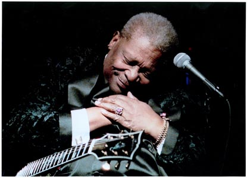
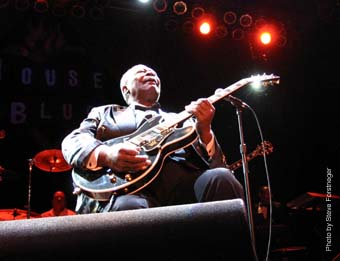
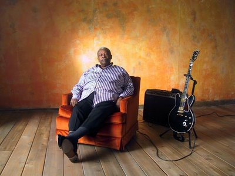

Я еще не сыграл настолько хорошо, насколько мог бы, и я все еще стараюсь сыграть лучше. Ничего не получается так хорошо, как бы мне хотелось. Я стараюсь делать все, что я делаю – пою, играю на гитаре, выступаю – я все это пытаюсь делать лучше. Каждый день я стараюсь работать лучше, чем накануне.Король говорит это не просто так. Великий блюзмен по-прежнему любит концертные выступления. Он дает более 200 концертов в год, не смотря на то, что у него диабет второго типа, повышенное давление, боли в спине и коленях, которые заставляют его выступать на сцене только сидя. Его последний альбом “Live!”, выпущенный в февраля 2008 года, представляет концертные версии "When Love Comes To Town," "Rock Me Baby," "That's Why I Sing The Blues" and "The Thrill Is Gone".
Поговаривают, что мои концертные альбомы – это лучшее из моих работ. Ну, раз так, я подумал, попробую-ка я еще раз," – говорит он посмеиваясь. –”Я никогда не собирался уходить на пенсию. Если настанет такое, когда я не смогу играть, или мое здоровье настолько ухудшиться, или люди перестанут меня слушать, или покупать мои CD, тогда, конечно, я остановлюсь. Но пока у меня есть работа, и люди поддерживают меня, и, похоже, им нравится видеть, как я делаю то, что делаю, тогда зачем мне останавливаться? Вы можете назвать причину?
Нет. Что у нас есть, это пять вопросов БиБиКингу. Q: Вы играете блюз так долго. Почему вы играете до сих пор?
Я не богат, поэтому я работаю. И мне нравится работать, поэтому я работаю. Это моя работа, так что я зарабатываю себе на жизнь так.
Q: За эти годы вы отыграли столько концерт. Был такой, который особенно запомнился?
Да, когда я играл в Филмор-Вест в Сан-Франциско (в 1968). Этот выделяется среди прочих. Это был новый зал, и все было для меня по-новому. Там было много молодежи, и это было сборище совершенно не похожее на публику, для которой я играл раньше. Они делали такое, чего я никогда не видел. Они вставали и аплодировали, они мне устроили овацию стою. Для меня это было ново. У меня такого прежде не случалось.
Q: Есть такая песня, про которую вы думаете, что фэны хотят слышать ее каждый вечер? И как вам удается поддерживать в этой песне свежесть?

Это песня «Чувство прошло» "The Thrill is Gone". И я играю ее каждый вечер так, словно никогда не играл ее прежде. Я играю ее так, как я чувствую именно в этот вечер, поэтому она всегда для меня свежая. Другими словами, я не собираюсь повторять ее в том же виде, в каком я ее записал.Q: На концертах вы много разговариваете с публикой. Почему?
Разговариваю, и еще как! Иногда, слишком много. Но это общение нужно, чтобы я узнал людей, и даю людям возможность узнать меня. Иногда меня критикую за то, что я слишком много разговариваю, ноя не собираюсь виниться. Я из Миссиссиппи – я люблю людей, и люблю с ними разговаривать, рассказывать им такое, что они обычно не услышат на концерте. Я считраю их не просто фэнами, но и друзьями. Они меня портят своим добрым отношением каждый раз, когда они выходят из дома и тратят время на то, чтобы побыть со мной, послушать, как я играю, послушать, как я рассказываю им какие-то истории и анекдоты. Я думаю, весь смысл развлечения в этом: нужно дать людям что-то радостное, что-то, чего у них прежде не было. Я надеюсь, что людям понравится то, что я делаю; что они будут благодарны за мои попытки развлечь их. А я постараюсь сыграть для них так хорошо, как только могу. И надеюсь, свою радость они принесут с собой к себе домой.
Король сейчас владеет 16 гитарами по имени Люсиль. Но только две из них берет с собой в дорогу на гастроли.
Я не из тех гитаристов, кто умеет играть так хорошо, что им требуется 5 или 6 гитар. А мне достаточно двух.
Первая Люсиль была украдена из багажника его Олдсмобиля. Кинг объявил Fox News, что готов заплатить 100 000$ тому, кто вернет его настоящую Люсиль. Он владеет сетью блюзовых клубов по всей стране. Его самый большой хит "The Thrill Is Gone” поднялся до 15го места в поп-чартах в 1970 году. Раритет «Биттлз» "Dig It" из сессии записи "Let It Be" упоминает по имени БиБиКинга. Кинг множество раз появлялся в теле-сериалах, включая «Женаты… с детьми» и «Шоу Косби».
Многие до сих пор не знают, почему Кинг назвал свою гитару Люсилль. Он готов повторить эту историю в тысячный раз:
Я тогда жил в Мемфисе (в середине 50-х). Я играл в местечке под названием Твист. Там бывало холодно. Бралась большая бадья для мусора, ее наполняли керосином и зажигали. Вот что мы использовали для согревания. Ее устанавливали в середине танцпола, и люди танцевали вокруг нее. Но вот в тот вечер два мужика начали драться, и один ударил другого так, что тот повалил бадью. Керосин разлился по полу и горел так, как будто начался настоящий пожар. Все побежали к выходу, включая меня. Но когда я выбежал наружу, я понял, что я забыл внутри гитару (акустическую гитару за 30$). И я побежал назад за ней. Здание было деревянным, оно быстро загорелось и стало рушиться. Бревна падали вокруг меня. Я едва не потерял свою жизнь, пытаясь спасти свою гитару. А на следующее утро я узнал, что драка возникла из-за дамы, которая работала в маленьком ночном клубе. Я не был с ней знаком, но я слышал, что ее звали Люсилль. И я назвал свою гитару Люсилль, чтобы всегда помнить, что не стоит поступать так. Вот так появилось имя. Больше я не пытался бросаться назад в огонь, чтобы спасти свою гитару.
Michael Lisi (http://timesunion.com/ASPStories/Story.asp?StoryID=669512&Category=ARTS&LinkFrom=RSS&TextPage=3 )
